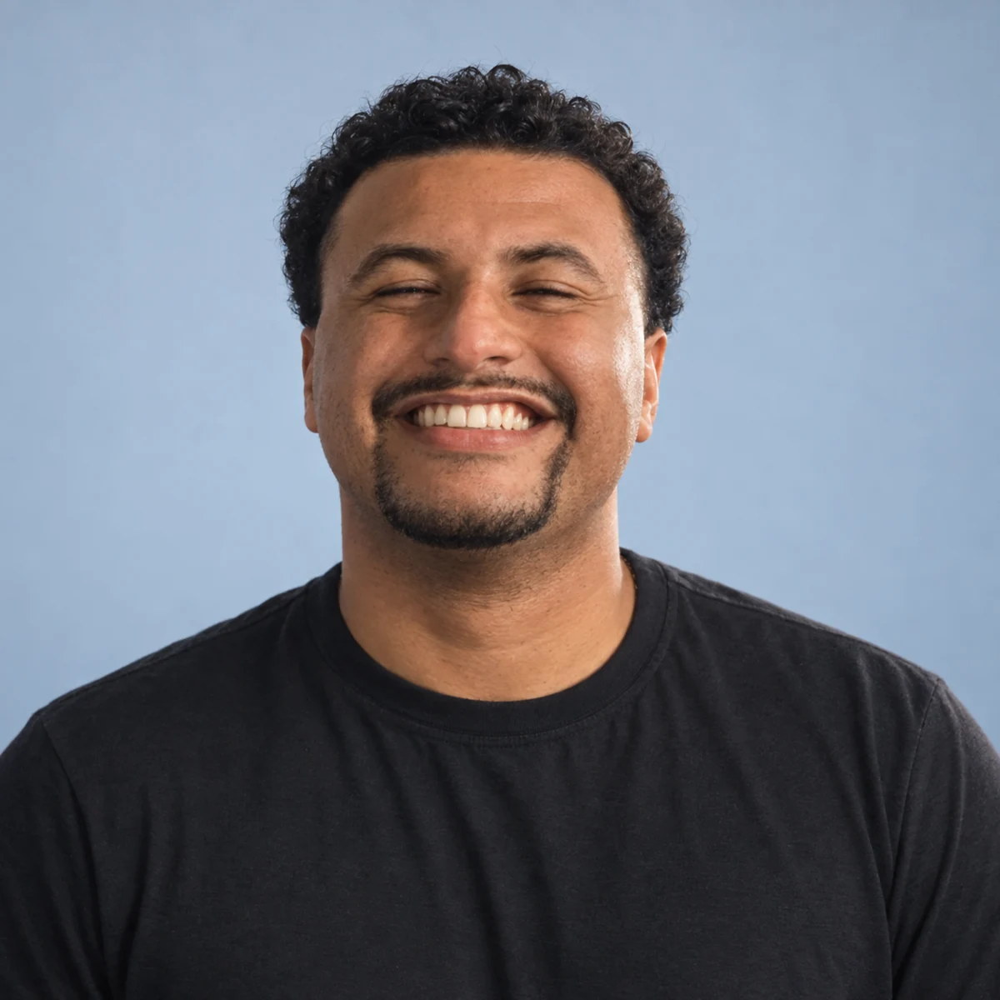
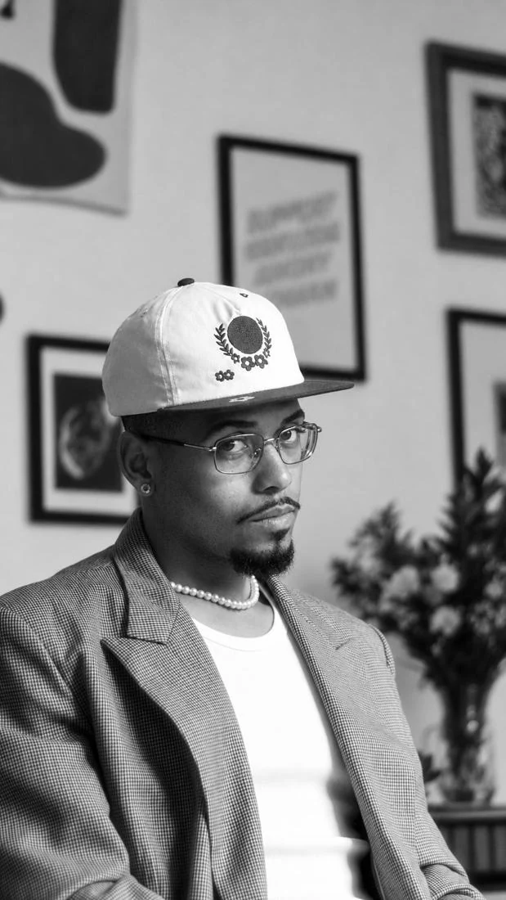
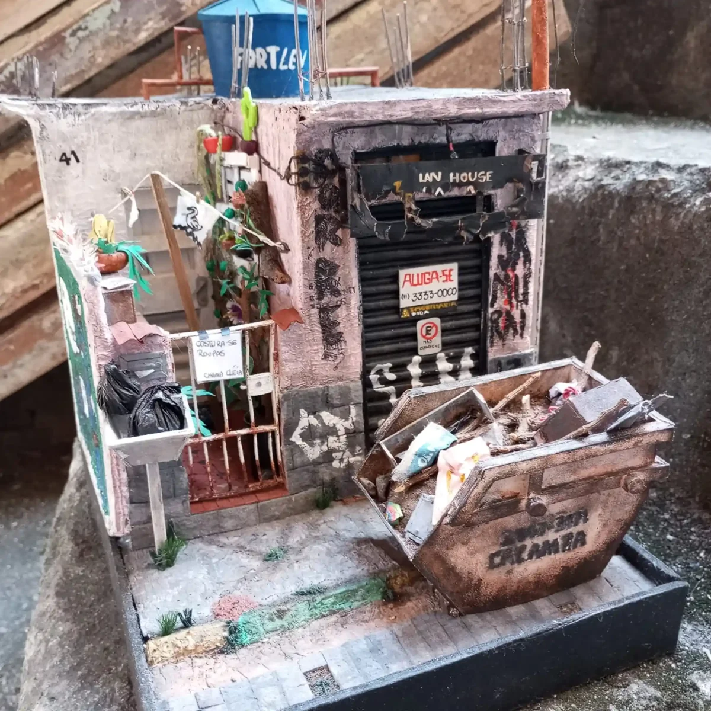
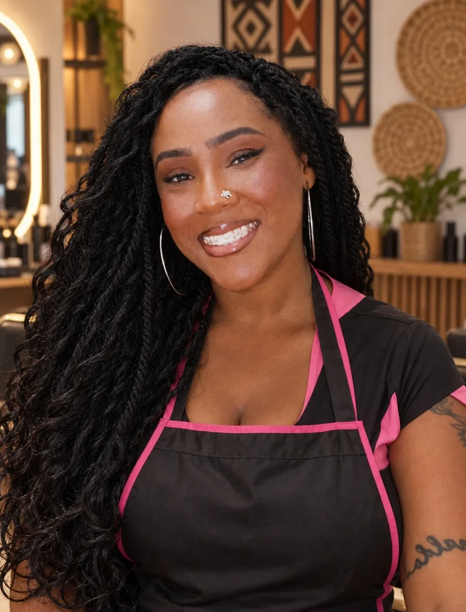

Serviços para eventos
Érika Bezerra Eventos
Apresentar experiência e serviços, com portfólio e contato para eventos.
Abrir siteAndrew Moura · Presença digital
Sites, portfólios e Instagram para apresentar o que você faz com clareza, personalidade e cuidado.
Para profissionais e pequenos negócios.
Design, estratégia e tecnologiaEscolha a necessidade e conheça um exemplo real.
6 projetos
Apresentar experiência e serviços, com portfólio e contato para eventos.
Abrir site
Uma apresentação moderna da trajetória profissional, em formato de currículo digital.
Abrir site
Atuação, dança e criação reunidas para apresentar trabalhos e receber propostas.
Abrir site
Dioramas, histórias e detalhes de obras artesanais, com contato para encomendas.
Abrir sitePreparações, fotos e vídeos para apresentar o trabalho e conversar sobre eventos.
Abrir site
Referências de tranças e preparação de pedidos. Agenda demonstrativa, com confirmação pela profissional.
Abrir siteEu organizo sua presença digital para que seu negócio transmita confiança, profissionalismo e clareza desde o primeiro contato.
Solicitar orçamento↗Instagram sem identidade
↗Portfólio improvisado
↗Site inexistente ou desatualizado
↗Materiais pouco profissionais
↗Valor difícil de comunicar
↗Visual inconsistente
Posicionamento, identidade e comunicação trabalhando na mesma direção.
Ver detalhesUma estrutura para apresentar seu negócio e transformar interesse em contato.
Ver detalhesSeu trabalho, sua experiência e seus serviços com a apresentação que merecem.
Ver detalhesMateriais visuais consistentes para redes sociais, campanhas e divulgação.
Ver detalhesImagens alinhadas à sua presença, para sites, portfólios e redes sociais.
Ver detalhesEdição de até 10 fotos para a apresentação do seu trabalho.
Ver detalhesQuatro soluções.
Valores claros desde o início.
Tratamento de imagens para valorizar sua apresentação.
Conversar sobre o serviçoSeu trabalho e seus serviços em uma apresentação profissional.
Conversar sobre o serviçoOrganização da presença da sua marca no Instagram.
Conversar sobre o serviçoUma apresentação conectada em três frentes.
Conversar sobre o serviçoOs detalhes de cada entrega e o prazo são combinados antes do início do projeto.
Entendo seu negócio, seu objetivo e o momento atual.
Selecionamos o que realmente faz sentido para sua presença digital.
Produzo o design, os materiais e a estrutura que combinamos.
Você recebe tudo organizado e pronto para utilizar.
Retratos criados com IA a partir de foto pessoal.
Sou Andrew e ajudo profissionais e pequenos negócios a melhorarem a forma como se apresentam no digital.
Uno estratégia, design, tecnologia e inteligência artificial em estruturas profissionais, funcionais e alinhadas ao objetivo de cada projeto.
Ver projetosRespostas para escolher seu serviço e saber como dar o próximo passo.
Conversar sobre meu projetoSe você precisa apresentar sua trajetória e seus trabalhos, comece pelo portfólio. Para organizar sua marca nas redes, conheça o Instagram completo. Se quer reunir portfólio, site e Instagram, há uma opção que conecta as três frentes. Para melhorar imagens que você já tem, escolha a edição de fotos. Compare os serviços e valores ou converse com Andrew para definir o melhor caminho.
Sim. Você pode contratar um serviço individual ou combinar entregas em um projeto. O que será produzido e o investimento são alinhados antes do início.
Separe uma descrição do seu trabalho, seus serviços, contatos, fotos e referências do que você gosta. Se já tiver logotipo e materiais da marca, eles também ajudam. Os materiais necessários são confirmados de acordo com o serviço escolhido.
O prazo depende do serviço, do volume de conteúdo e da complexidade do projeto. A previsão é definida na proposta, considerando os materiais e as aprovações necessários para a entrega.
Os sites são preparados para computador, tablet e celular. Domínio próprio e hospedagem são definidos separadamente conforme a necessidade do projeto; confirme essas condições na proposta antes de contratar.
Não necessariamente. Você pode apresentar as fotos que já tem para avaliar o que pode ser aproveitado ou editado. Quando fizer sentido para o projeto, também é possível conversar sobre imagens produzidas com inteligência artificial.
Antes de começar, alinhe o conteúdo, a direção visual e o que está incluído na entrega. A quantidade de revisões e eventuais custos de pedidos adicionais devem ser confirmados na proposta.
Acesse Solicitar orçamento, informe seu nome, o serviço de interesse, seu Instagram e o que pretende realizar. Você pode conferir a mensagem antes de continuar no WhatsApp. O envio é feito por você, dentro do WhatsApp. Se preferir, use o e-mail ou o Instagram disponíveis no rodapé.